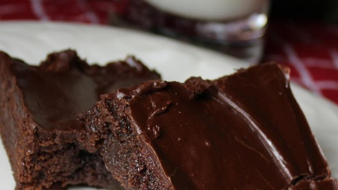
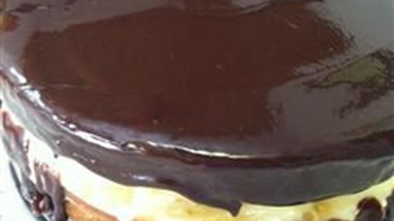
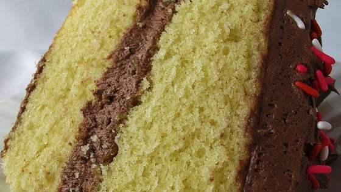
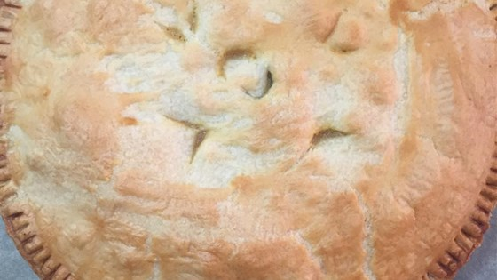

Chicken Alfrado
| Directions | Ingredients |
|---|---|
| Bring a large pot of lightly salted water to a boil. Add fettuccini and cook for8 to 10 minutes or until al dente; drain. |
1 pound fettuccini pasta |
| Melt 2 tablespoons butter in a large skillet over medium heat. Saute chicken until no longer pink and juices run clear. |
1 1/2 cups butter, divided |
| In a large saucepan combine ricotta cheese, cream, salt, Parmesan cheese and remaining butter. Cook over medium heat until well combined, about 10 minutes. Stir in cooked fettuccini and chicken; cook until heated through. |
1 pound skinless, boneless chicken breast halves - cut into cubes |
| 2 (16 ounce) containers whole milk ricotta cheese | |
| 1 cup grated Parmesan cheese | |
| 1 teaspoon salt | |
| 1 pint heavy cream |
Brownies

| Directions | Ingredients |
|---|---|
| Preheat oven to 350 degrees F (175 degrees C). Grease and flour an 8-inch square pan. |
1/2 cup butter |
| In a large saucepan, melt 1/2 cup butter. Remove from heat, and stir in sugar, eggs, and 1 teaspoon vanilla. Beat in 1/3 cup cocoa, 1/2 cup flour, salt, and baking powder. Spread batter into prepared pan. |
1 cup white sugar |
| Bake in preheated oven for 25 to 30 minutes. Do not overcook. | 2 eggs |
| To Make Frosting: Combine 3 tablespoons softened butter, 3 tablespoons cocoa, honey, 1 teaspoon vanilla extract, and 1 cup confectioners' sugar. Stir until smooth. Frost brownies while they are still warm. |
1 teaspoon vanilla extract |
| 1/3 cup unsweetened cocoa powder | |
| 1/2 cup all-purpose flour | |
| 1/4 teaspoon baking powder | |
| 3 tablespoons butter, softened | |
| 3 tablespoons unsweetened cocoa powder | |
| 1 tablespoon honey | |
| 1 cup confectioners' sugar |
Boston Creame Pie

| Directions | Ingredients |
|---|---|
| Preheat oven to 375 degrees F (190 degrees C). Grease and flour two 9 inch round cake pans. Sift the all-purpose flour, cake flour, baking powder and salt together and set aside. |
6 tablespoons butter, softened |
| In a deep bowl cream 6 tablespoons of the butter with 3/4 cup sugar until light and fluffy. Beat in the 2 eggs, one at a time, then beat in the 1 teaspoon vanilla extract. Add the flour mixture alternately with the 1/2 cup of the milk in 3 additions, Beating the batter smooth after each addition. Divide the batter between the 2 prepared pans. |
2 tablespoons all-purpose flour |
| Bake at 375 degrees F (190 degrees C) for 15 minutes or until cakes begin to shrink away from the sides of the pans and centers spring back when lightly touched. Turn the cakes onto wire racks to cool. |
1 1/2 cups cake flour |
| To Make The Filling: Combine the 1/2 cup light cream with 1/4 cup of the milk and, cook over medium heat until bubbles begin to form around the edge of the pan. Immediately add 1/4 cup of the sugar and the salt, stirring until dissolved. Remove the pan from the heat. |
2 teaspoons baking powder |
| In a small bowl, combine 1/4 cup of the milk with the cornstarch and whisk to remove lumps. Whisk in the 2 eggs. Add the hot cream mixture in a thin stream, whisking constantly. Return to the mixture to the saucepan, bring to a boil, and cook over low heat, stirring constantly, until the custard thickens and is smooth (about 5 minutes). Remove from heat and stir in the 1/2 teaspoon vanilla and allow to cool to room temperature. |
1/4 teaspoon salt |
| To Make The Chocolate Frosting: In a heavy saucepan over low heat, stir the chocolate pieces and 2 tablespoons butter until they are completely melted. Remove from the heat and, stirring constantly, add the 1/4 cup light cream in a thin steady stream. When mixture is smooth, stir in the confectioners' sugar and beat vigorously. Stir in the 1/2 teaspoon vanilla. |
3/4 cup white sugar |
| To Assemble Cake: Spread the cooled filling over one the cooled cakes and place the second cake on top. Pour the chocolate frosting evenly over the top allowing it to spill down the sides. |
2 eggs |
| 1 teaspoon vanilla extract | |
| 1/2 cup milk | |
| 1/2 cup light cream | |
| 1/2 cup milk | |
| 1/4 cup white sugar | |
| 1 pinch salt | |
| 4 teaspoons cornstarch | |
| 2 eggs | |
| 1/2 teaspoon vanilla extract | |
| 3 (1 ounce) squares semisweet chocolate | |
| 2 tablespoons butter | |
| 1/4 cup light cream | |
| 1/2 teaspoon vanilla extract | |
| 1/2 cup confectioners' sugar |
Yellow Cake

| Directions | Ingredients |
|---|---|
| Preheat oven to 350 degrees F (175 degrees C). Grease and flour one 9x13 inch pan. Mix together the flour, baking powder and salt; set aside. |
2 cups all-purpose flour |
| In a large bowl, cream sugar and shortening until light and fluffy. Add eggs one at a time, beating thoroughly after each addition. Add flour mixture alternately with milk, beating just to combine. finally, stir in vanilla. Pour batter into the prepared pan. |
1 1/2 cups white sugar |
| Bake at 350 degrees F (175 degrees C) for 40 to 45 minutes, or until a toothpick inserted into the cake comes out clean. Frost and enjoy. |
1/2 cup shortening |
| 1 cup milk | |
| 3 1/2 teaspoons baking powder | |
| 1 teaspoon salt | |
| 1 teaspoon vanilla extract | |
| 3 eggs |
Chicken Pot Pie

| Directions | Ingredients |
|---|